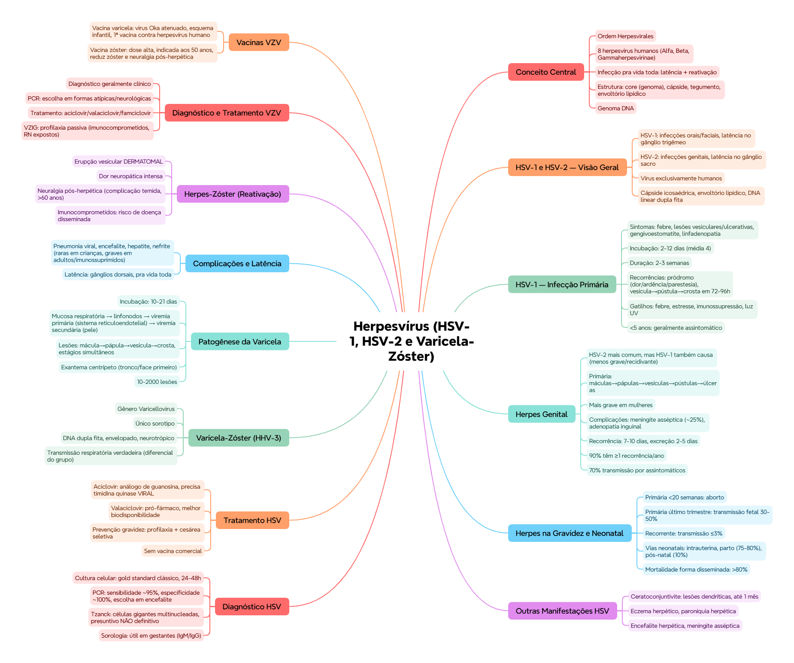

ClinicusMed · Dossiê Clinicus — Padrão de Excelência
Ordem Herpesvirales. Existem 8 herpesvírus humanos patogênicos: HSV-1, HSV-2, VZV, EBV, CMV, HHV-6, HHV-7 e HHV-8 — divididos em subfamílias Alfa, Beta e Gammaherpesvirinae.
Estrutura do vírion: esférico e complexo, com 4 partes: core (genoma), cápside (protege o DNA), tegumento (matriz proteica) e envoltório lipídico com glicoproteínas. Genoma: DNA.
| HSV-1 | HSV-2 | |
|---|---|---|
| Predomina em | Infecções orais e faciais | Infecções genitais (transmissão sexual) |
| Local de latência | Gânglio trigêmeo | Gânglio sacro |
Vírus exclusivamente humanos, família Herpesviridae, cápside icosaédrica, envoltório lipídico, genoma de DNA linear de dupla fita.
Sintomas: febre, lesões vesiculares/ulcerativas, gengivoestomatite, linfadenopatia localizada, mal-estar geral e anorexia.
| Parâmetro | Valor |
|---|---|
| Incubação | 2-12 dias (média 4 dias) |
| Duração | 2-3 semanas |
Recorrências: pródromos de dor, ardência, coceira ou parestesia. Lesões: vesícula → pústula → crosta em 72-96h; cura total em 8-10 dias.
Fatores desencadeantes de recorrência: febre, estresse, imunossupressão, exposição à luz ultravioleta.
Pode ser causado por qualquer um dos dois, mas HSV-2 é mais comum. HSV-1 genital é menos grave e menos recidivante.
Infecção primária genital: máculas → pápulas → vesículas → pústulas → úlceras. Alta replicação viral, excreção até 3 semanas. Mais grave em mulheres (lesões bilaterais na vulva, possível acometimento cervical).
Complicações: meningite asséptica (~25% dos casos), adenopatia inguinal, dor intensa, extensão pra vulva/cérvix/períneo/nádegas.
| Recorrência do herpes genital | Valor |
|---|---|
| Duração | 7-10 dias |
| Excreção viral | 2-5 dias (menor que na primária) |
| Pacientes com ≥1 recorrência/ano | 90% |
| Transmissão por pessoas assintomáticas | 70% |
| Situação | Risco |
|---|---|
| Infecção primária <20 semanas | Aborto |
| Infecção primária no último trimestre | Transmissão fetal 30-50% |
| Infecção recorrente | Risco de transmissão ≤3% |
Vias de infecção neonatal: intrauterina (microcefalia, hidrocefalia), durante o parto (75-80% dos casos), pós-natal (10%, contato com familiares/hospital).
| Método | Detalhe |
|---|---|
| Isolamento viral (cultura celular) | Gold standard clássico. Efeito citopático em 24-48h. Fundamental em neonatos e imunocomprometidos |
| PCR | Sensibilidade ~95%, especificidade ~100%. Método de escolha em encefalite herpética e lesões mucocutâneas |
| Citológico (Tzanck) | Células gigantes multinucleadas, inclusões intranucleares. Presuntivo, NÃO definitivo |
| Sorológico (IgM/IgG) | Útil em gestantes pra distinguir primoinfecção de infecção prévia. ELISA específicos pra HSV-1/HSV-2 |
Aciclovir — análogo de guanosina, inibe a DNA polimerase viral. Requer fosforilação pela timidina quinase viral (que dá seletividade). Termina a cadeia de DNA viral. Fármaco de primeira linha.
Valaciclovir — pró-fármaco, melhor biodisponibilidade oral (se converte em aciclovir após absorção).
Prevenção na gravidez: profilaxia antiviral + cesárea seletiva se houver lesões ativas. Não existe vacina comercial — a latência dificulta a imunização.
Gênero Varicellovirus. Um único sorotipo (explica a eficácia da vacina). Vírus DNA de dupla fita, envelopado, neurotrópico.
Varicela = primoinfecção. Zóster = reativação. Vacina = prevenção de ambos.
Incubação: 10-21 dias. Replicação inicial na mucosa respiratória → dissemina pra linfonodos → viremia primária (infecta o sistema reticuloendotelial) → viremia secundária leva o vírus à pele → replicação intensa na epiderme, formando as lesões típicas.
Lesões cutâneas: mácula → pápula → vesícula → crosta, em diferentes estágios simultaneamente, altamente contagiosas, com prurido intenso (favorece sobreinfecção bacteriana).
Clínica: febre, mal-estar geral, exantema centrípeto (começa em tronco/face), 10-2000 lesões. Leve em crianças saudáveis; pode ser grave em adultos.
Pneumonia viral, encefalite, hepatite, nefrite — raras em crianças imunocompetentes, mas frequentes e graves em adultos e imunossuprimidos.
Latência: estabelecida nos gânglios dorsais, persistência pra vida toda.
Erupção vesicular dermatomal, com dor intensa prévia. Limitado a um dermátomo, com dor neuropática.
Imunocomprometidos: maior risco de doença disseminada, viremia prolongada, comprometimento pulmonar/hepático/neurológico.
Diagnóstico: geralmente clínico. PCR é o método de escolha em formas atípicas ou neurológicas. Imunofluorescência também disponível. Sorologia: IgM indica infecção recente.
Tratamento: aciclovir/valaciclovir/famciclovir (inibem a DNA polimerase viral após ativação pela timidina quinase viral). Indicado em imunocomprometidos, adultos, zóster. Imunoglobulina VZIG: profilaxia passiva em imunocomprometidos e recém-nascidos expostos.
| Vacina | Detalhe |
|---|---|
| Vacina varicela | Vírus Oka atenuado, esquema infantil. Primeira vacina contra um herpesvírus humano |
| Vacina herpes-zóster | Dose alta de vírus, indicada aos 50 anos. Reduz incidência/severidade do zóster e da neuralgia pós-herpética |
Vamos acompanhar o Sr. Waldemar, 68 anos, com dor intensa em uma faixa do tórax, seguida de lesões cutâneas. O caso evolui em 3 níveis — clica em cada um pra ver como as coisas vão se desenrolando.
Visão geral do capítulo em formato visual — ideal pra revisão rápida antes da prova. O conteúdo completo, com explicações e exemplos, está no Guia de Estudo.

O sistema guarda, no seu navegador, quais cards você já sabe bem e quais precisam voltar mais cedo — cada vez que você avalia um card, ele recalcula quando ele deve voltar.
10 questões, do mais básico ao mais puxado. Escolhe uma alternativa, depois clica em "Ver comentário completo" — vale a pena ler até quando você acerta, porque o comentário explica cada alternativa, não só a certa.